RStudio project
Open the RStudio project that we created in the first session. I recommend to use this RStudio project for the entire course and within the RStudio project create separate R scripts for each session.
# Session 9: Eurasian lynx reintroduction in RangeShiftR
and save the file in your folder “scripts” within your project folder,
e.g. as “9_RS_lynx.R”This practical illustrates how spatially-explicit individual-based
models like RangeShiftR can aid effective decision making
for species reintroductions. As example, we re-implement a case study on
the reintroduction of Eurasian lynx (Lynx lynx) to Scotland
(Ovenden et al. 2019). The original study
was also based on RangeShifter, which makes reimplementation
straight forward. We use the same parameters by and large but on a
slightly coarser resolution. In line with Ovenden
et al. (2019), we simulate lynx range expansion and population
viability from different potential reintroduction sites.
First, we set up all the parameter modules that we need to run a
RangeShiftR simulation (see schematic figure in Practical
8).
We need to set up the folder structure again with folder containing the models of this practical and the three sub-folders named ‘Inputs’, ‘Outputs’ and ‘Output_Maps’. To do so, use your file explorer on your machine, navigate to the “models” folder within your project, and create a sub-folder for the current practical called “RS_Lynx”. Next, return to your RStudio project and store the path in a variable. This can either be the relative path from your R working directory or the absolute path.
# Set path to model directory
dirpath = "models/RS_Lynx/"# load required packages
library(RangeShiftR)
library(raster)
library(rasterVis)
library(viridis)
library(RColorBrewer)
library(latticeExtra)
library(grid)
library(gridExtra)
library(tidyverse)
library(ggplot2)
# Create sub-folders (if not already existing)
if(!file.exists(paste0(dirpath,"Inputs"))) {
dir.create(paste0(dirpath,"Inputs"), showWarnings = TRUE) }
if(!file.exists(paste0(dirpath,"Outputs"))) {
dir.create(paste0(dirpath,"Outputs"), showWarnings = TRUE) }
if(!file.exists(paste0(dirpath,"Output_Maps"))) {
dir.create(paste0(dirpath,"Output_Maps"), showWarnings = TRUE) }Download the input files here and put these into the ‘Inputs’ folder.
The original lynx model was run on a 100 m landscape grid. Here, we use a spatial resolution of 1 km to speed up computations, for illustrative purposes.
We do not have exactly the same land cover maps and woodland maps available as was used by Ovenden et al. (2019). Instead, we use the Land Cover Map 2015 (LCM2015) for Great Britain (Rowland et al. 2017). With this, we are not able to distinguish low quality and high quality woodland. Also, by aggregating the land cover map to 1 km, we may have further discarded some information on woodland. Overall, this results in lower woodland cover than reported in Ovenden et al. (2019). Nevertheless, as the goal of this practical is illustration rather than exact replication of the original results, these differences should not be of any concern to us.
We first read in the (pre-processed) land cover map and take a look at the habitat classification.
# Land cover map of scotland
landsc <- raster(paste0(dirpath, "Inputs/LCM_Scotland_2015_1000.asc"))
plot(landsc)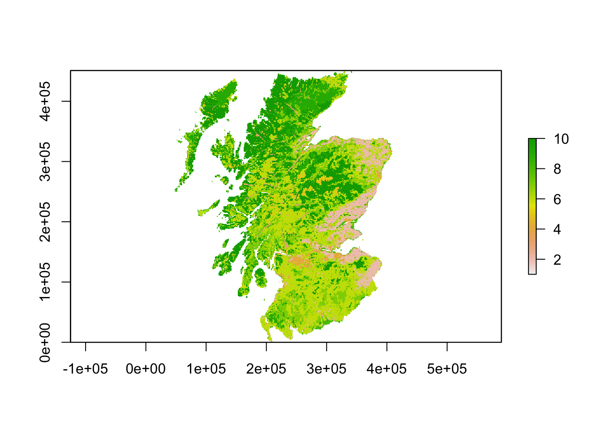
# Plot land cover map and highlight cells with initial species distribution - option 2 with categorical legend:
landsc.f <- as.factor(landsc)
# add the land cover classes to the raster attribute table
(rat <- levels(landsc.f)[[1]])## ID
## 1 1
## 2 2
## 3 3
## 4 4
## 5 5
## 6 6
## 7 7
## 8 8
## 9 9
## 10 10rat[["land-use"]] <- c("salt water", "arable + horticulture", "freshwater", "built-up areas + gardens", "inland rock", "grasslands", "woodland", "supra-/littoral sediment", "marsh, swamp", "heath")
levels(landsc.f) <- rat
levelplot(landsc.f, margin=F, scales=list(draw=FALSE), col.regions=brewer.pal(n = 10, name = "Spectral"))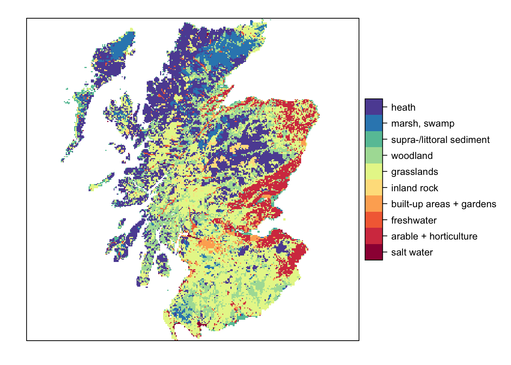
We have already prepared a map of woodland patches from the above land cover map and will read this in. These woodland patches constitute the suitable breeding patches for the Eurasian lynx. In total, we have identified 39 suitable patches of varying size. Compare the resulting map to Fig. 1 in Ovenden et al. (2019) to get an idea about the relative differences in patch size and distribution.
# Read in woodland patch files
patches <- raster(paste0(dirpath,'Inputs/woodland_patchIDs_1000.asc'))
# Plot the patches in different colours:
plot(patches,axes=F, legend=F, col = c('grey',rep(brewer.pal(n = 10, name = "Paired"),4)))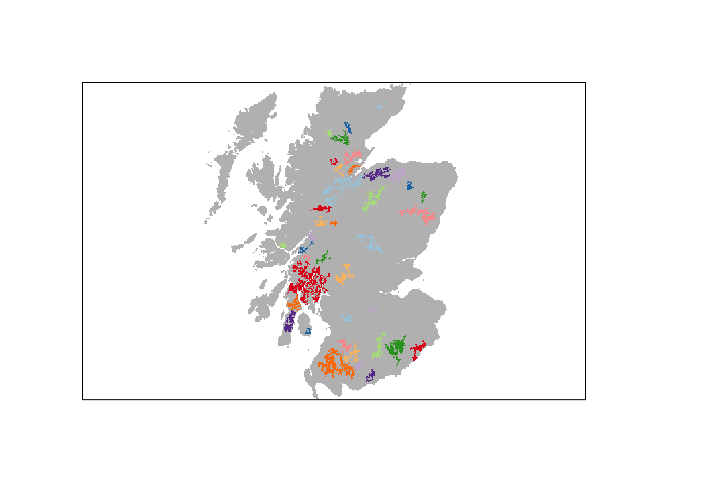
# In total, we have 39 patches of different size
values(patches) %>% table## .
## 0 1 2 3 4 5 6 7 8 9 10 11 12
## 74103 47 83 48 180 191 50 85 74 189 281 512 68
## 13 14 15 16 17 18 19 20 21 22 23 24 25
## 307 64 374 113 115 52 65 272 84 50 86 58 1229
## 26 27 28 29 30 31 32 33 34 35 36 37 38
## 244 183 49 242 86 49 244 428 162 199 185 816 61
## 39
## 96Each woodland patch has a unique ID. Yet, the exact IDs are different from Ovenden et al. (2019). We thus have to search a little to find the patch IDs that correspond to the reintroduction sites in the original paper.
# Plot patches and add labels
plot(patches,axes=F, legend=F, col = c('grey',rep(brewer.pal(n = 10, name = "Paired"),4)))
patches_pol <- rasterToPolygons(patches, dissolve=T) # Makes spatial polygons
text(patches_pol,labels=patches_pol@data$woodland_patchIDs_1000)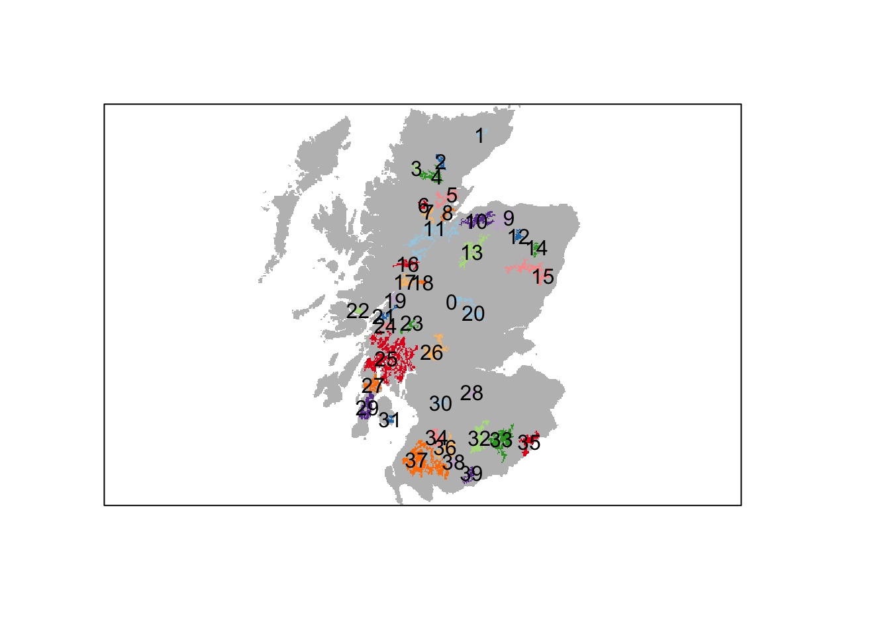
The following patch IDs roughly correspond to the reintroduction sites used in (Ovenden et al. 2019): 29 = Kintyre Peninsula; 35 = Kielder Forest; 15 = Aberdeenshire. Note that the patches are smaller and more isolated than in the original study.
We can now define the landscape parameters. This time, we want to run
a patch-based model and hence have to provide a (i) grid-based landscape
map that contains the different habitat classes used to set the per-step
mortality in the dispersal module, and (ii) the patch file used to
define the suitable breeding patches. We have to provide the parameter
K_or_DensDep for each habitat class in the landscape file.
This parameter describes the strength of density dependence 1/b
(Bocedi et al. 2021; Malchow et al. 2021).
Thereby, b can be interpreted as the area per individual
[ha/ind] at which an individual will feel density dependence, meaning
the area below which it feels the population is too dense. You could
also interpret it as the area that the individual will defend as
territory and will not allow any conspecifics in. Ovenden et al. (2019) specified 1/b
with 0.000285 ind/ha, meaning that an adult individual will defend a
territory of c. 3509 ha or 35 km2.
land <- ImportedLandscape(LandscapeFile = "LCM_Scotland_2015_1000.asc",
PatchFile = "woodland_patchIDs_1000.asc",
Resolution = 1000,
Nhabitats = 10,
K_or_DensDep = c(0, 0, 0, 0, 0, 0, 0.000285, 0, 0, 0)
)All demographic parameters are listed in Table 2 of Ovenden et al. (2019). The demographic model
comprises three stages: first-year juveniles (0–12 months), non-breeding
sub-adults (12–24 months) and breeding adults (>24months). To
properly simulate natal dispersal, we have to set an additional
dummy stage 0 (dispersing juveniles) in
RangeShiftR. After dispersal, dispersing juveniles (stage
0) will be assigned to stage 1 (first-year juveniles). This is fully
described in the RangeShifter
user manual.
# Transition matrix
(trans_mat <- matrix(c(0,1,0,0,0,0, 0.53, 0,0, 0, 0, 0.63, 5,0, 0, 0.8), nrow = 4, byrow = F)) # stage 0: dispersing newborns; stage 1 : first-year juveniles; stage 2: non-breeding sub-adults; stage 3: breeding adults## [,1] [,2] [,3] [,4]
## [1,] 0 0.00 0.00 5.0
## [2,] 1 0.00 0.00 0.0
## [3,] 0 0.53 0.00 0.0
## [4,] 0 0.00 0.63 0.8# Define the stage structure
stg <- StageStructure(Stages = 4, # four stages including dispersing juveniles
TransMatrix = trans_mat, # transition matrix
MaxAge = 17, # maximum age
FecDensDep = T # density dependence in fecundity
)
# Plot the vital rates against different density levels
plotProbs(stg)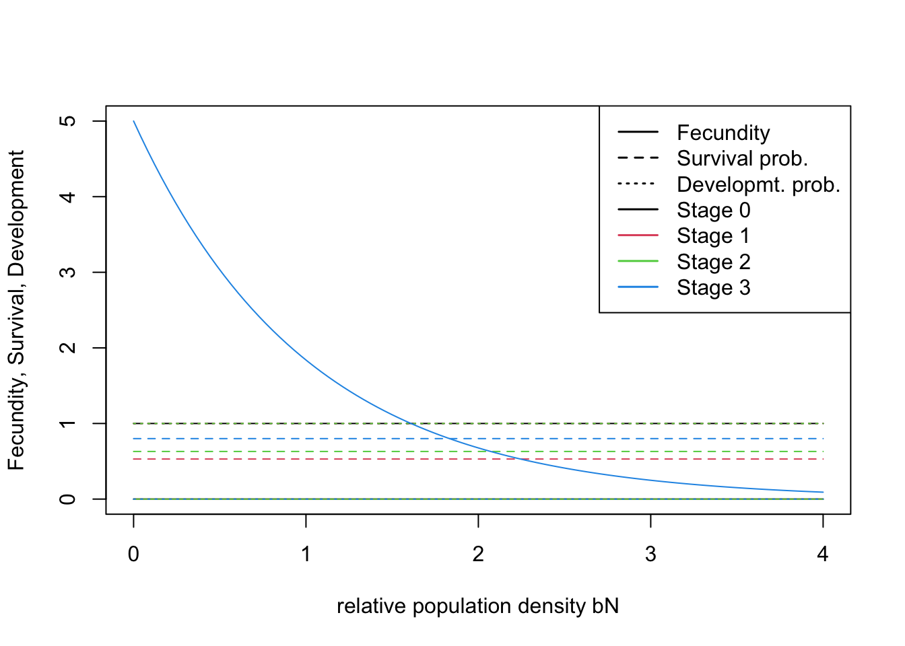
# Define the demography module
demo <- Demography(StageStruct = stg,
ReproductionType = 1, # simple sexual model
PropMales = 0.5) According to previous literature, Ovenden et al. (2019) considered Eurasian lynx as poor dispersers with some sex bias in the dispersal probability. Specifically, the males were assigned a higher emigration probability compared to females.
emig <- Emigration(DensDep=T, StageDep=T, SexDep = T,
EmigProb = cbind(c(0,0,1,1,2,2,3,3),
c(0,1,0,1,0,1,0,1),
c(0.4, 0.9, 0, 0, 0, 0, 0, 0),
c(10, 10, 0, 0, 0, 0, 0, 0),
c(1, 1, 0, 0, 0, 0, 0, 0)) ) # only emigration of juveniles, females higher than malesThe transfer phase of dispersal was modelled using a stochastic
movement simulator (SMS). This mechanistic movement model allows
individuals to perceive certain aspects of the landscape and select
their movement path accordingly. Individuals move stepwise from cell to
cell and the direction chosen at each step is determined by the land
cover costs (specified for each habitat class), the species’ perceptual
range (PR) and directional persistence
(DP).@Ovenden2019 defined the perceptual range as 500 m,
which is lower than our resolution and we this set PR=1.
Movement costs and per-step mortality probability are specified
following Table 1 in Ovenden et al.
(2019). Because of the coarser spatial resolution (1 km) and thus
larger step length used here, we had to increase the per-step mortality
compared to the original study.
transfer <- SMS(PR = 1, # Perceptual range in number of cells
PRMethod = 2, # Harmonic mean used to quantify movement cost within perceptual range
MemSize = 5, # number of steps remembered when applying directional persistence.
DP = 5, # directional persistence.
Costs = c(100000, 30, 100, 1000, 1000, 10, 1, 10, 10, 7), # movement cost per habitat class
StepMort = c(0.9999, 0.0002, 0.0005, 0.007, 0.00001, 0.00001, 0, 0.00001, 0.00001, 0.00001)) # per step mortality per habitat classThe settlement parameters are identical for both sexes except that males have to find a female to settle. Again, because of the coarser spatial resolution of 1 km and thus larger step length, we had to reduce the maximum number of steps.
settle <- Settlement(StageDep = F,
SexDep = T,
Settle = cbind(c(0, 1), c(1.0, 1.0), c(-10, -10), c(1, 1)), # here no difference between sexes
FindMate = c(F, T), # only males need to find a female
DensDep = T,
MaxSteps = 500
)With all three dispersal phases specified, we can now define the dispersal module. Also, we can plot the density dependent emigration probabilities.
# Dispersal
disp <- Dispersal(Emigration = emig,
Transfer = transfer,
Settlement = settle)
# plot parameters
plotProbs(disp@Emigration)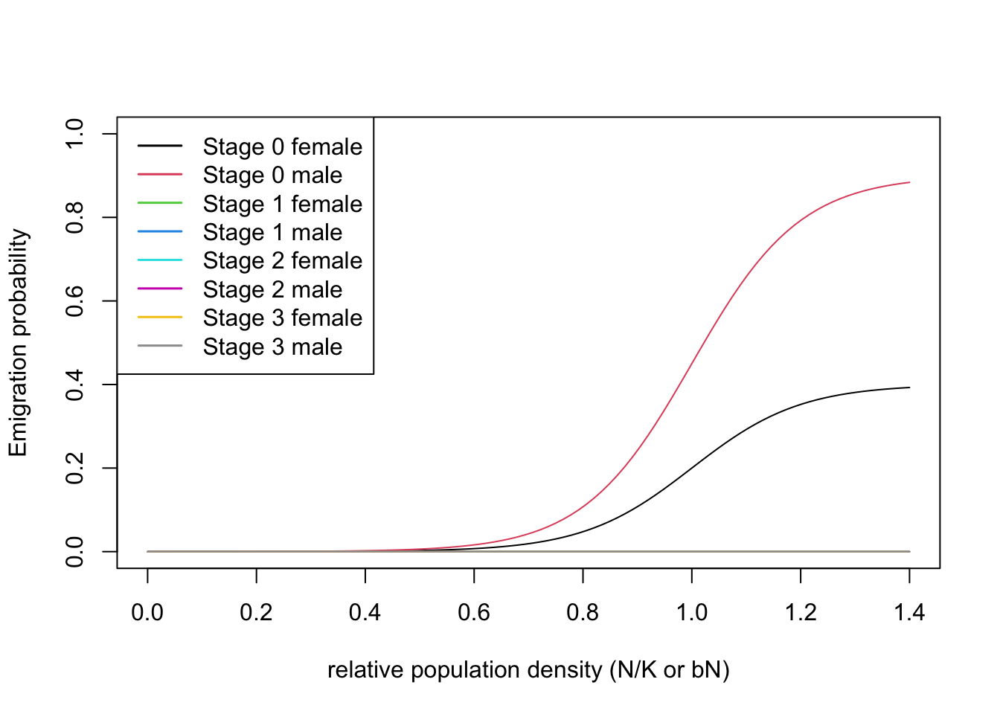
Ovenden et al. (2019) implemented single-site reintroductions with 10 individuals per site, and multi-site reintroduction with 32 individuals across two sites.
Initialising individuals in certain patches can be done in two different ways. We can either define an initial distribution map in the landscape module, or we can provide a text file with the individuals per patch in the initialisation module. Here, we will follow the latter approach as this allows explicitly manipulating the number of reintroduced individuals in multiple sites.
We define one scenario where we reintroduce 10 individuals to the patch 29 on the Kintyre Pensinsula. First, we have to prepare a text file specifying the number of initial individuals per patch and per sex and stage.
# prepare dataframe for InitIndsFile
(init_df_29 <- data.frame(Year=0,Species=0,PatchID=29,Ninds=c(5,5),Sex=c(0,1),Age=3,Stage=3))## Year Species PatchID Ninds Sex Age Stage
## 1 0 0 29 5 0 3 3
## 2 0 0 29 5 1 3 3We write the list of initial individuals into a file in the Inputs folder and then specify the initialisation module.
# write InitIndsFile to file
write.table(init_df_29, file=paste0(dirpath,'Inputs/InitInds_29.txt'), sep='\t', row.names=F, quote=F)
# Set initialisation
init_29 <- Initialise(InitType = 2, # Initialise from initial individuals list file
InitIndsFile = 'InitInds_29.txt')In the multi-site reintroduction scenarios, Ovenden et al. (2019) reintroduced 18 lynx to Kintyre Peninsula and 14 lynx to Aberdeenshire. Similar to above, we write the initial individuals list to file and then specify the initialisation module.
# prepare dataframe for InitIndsFile
(init_df_29_15 <- data.frame(Year=0,Species=0,PatchID=rep(c(29,15),each=2),Ninds=rep(c(9,7),each=2),Sex=c(0,1),Age=3,Stage=3))## Year Species PatchID Ninds Sex Age Stage
## 1 0 0 29 9 0 3 3
## 2 0 0 29 9 1 3 3
## 3 0 0 15 7 0 3 3
## 4 0 0 15 7 1 3 3# write InitIndsFile to fil
write.table(init_df_29_15, file=paste0(dirpath,'Inputs/InitInds_29_15.txt'), sep='\t', row.names=F, quote=F)
# Set initialisation
init_29_15 <- Initialise(InitType = 2, # from loaded species distribution map
InitIndsFile = 'InitInds_29_15.txt')This time, we set a more reasonable number of replicates with 100 runs and simulate range expansion over 100 years. We specify that output should be stored for each year.
# Simulations
RepNb <- 100
sim <- Simulation(Simulation = 0, # ID
Replicates = RepNb, # number of replicate runs
Years = 100, # number of simulated years
OutIntPop = 1, # output interval
OutIntOcc = 1,
OutIntRange = 1)When defining the parameter master objects for our two scenarios, we
take care to provide two different batchnum to avoid any
overwriting of file output. For illustrative purposed, we set a seed for
easy replicability of results.
# RangeShifter parameter master object for single-site reintroduction
s_29 <- RSsim(batchnum = 1, land = land, demog = demo, dispersal = disp, simul = sim, init = init_29, seed = 324135)
# RangeShifter parameter master object for multi-site reintroduction
s_29_15 <- RSsim(batchnum = 3, land = land, demog = demo, dispersal = disp, simul = sim, init = init_29_15, seed = 324135)All RangeShiftR modules are ready for running the
simulations. Ovenden et al. (2019) looked
at different output metrics: a) the number of replicates that reached
year 100; b) the mean number of habitat patches occupied at year 100; c)
the mean number of individuals at year 100; d) the extinction
probability over time. We will look at the same metrics, though in
slightly different order.
We run the simulation for the single-site reintroduction scenario.
# Run simulations
RunRS(s_29, dirpath)First, we inspect the mean number of individuals (abundance) over time and the mean number of occupied patches over time. Both are increasing, meaning that the reintroduction in the Kintyre Peninsula seems to be rather successful.
# general output of population size + occupancy
par(mfrow=c(1,2))
plotAbundance(s_29,dirpath,sd=T, rep=F)
plotOccupancy(s_29, dirpath, sd=T, rep=F)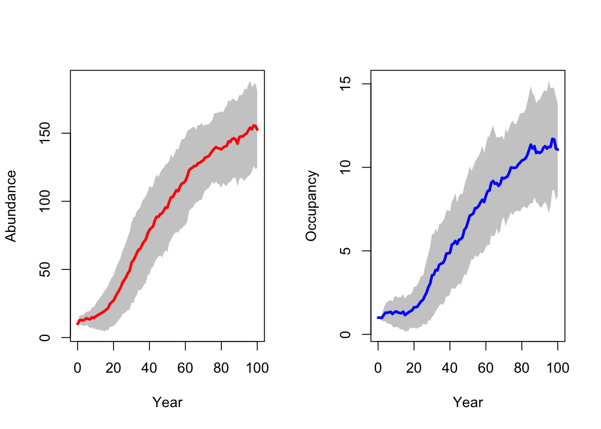
To obtain a deeper understanding of the reintroduction success, we
look at different colonisation metrics offered in the function
ColonisationStats(). Specifically, we calculate
colonisation probability for year 100 (the probability of a patch to be
occupied after 100 years) and the time to colonisation.
# Colonisation metrics
col_stats_29 <- ColonisationStats(s_29, dirpath, years = 100, maps = T)We can extract and map occupancy probability.
# mean occupancy probability in year 100
head(col_stats_29$occ_prob)## patch 100
## 1 1 0.06
## 2 2 0.12
## 3 3 0.09
## 4 4 0.37
## 5 5 0.46
## 6 6 0.26# map occupancy probability
mycol_occprob <- colorRampPalette(c('blue','orangered','gold'))
levelplot(col_stats_29$map_occ_prob, margin=F, scales=list(draw=FALSE), at=seq(0,1,length=11), col.regions=mycol_occprob(11))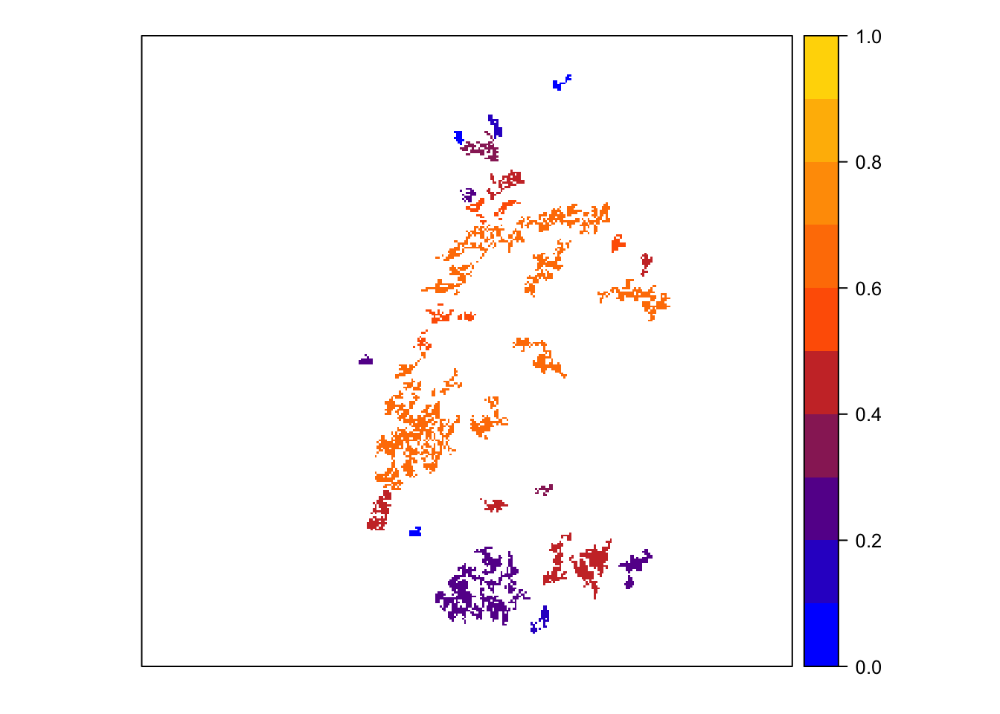
In order to get prettier maps, we need to do some code tweaking. Here, we provide one example for using the grey-shaded land cover map as background and overlaying this with the occupancy probability map. To keep the code clean, we define some helper functions.
# Some useful functions
# Store underlying landscape map display for later:
# Note: Not sure if this is really suitable, as we have 10 different landscape classes
bg <- function(main=NULL){
levelplot(landsc, margin=F, scales=list(draw=FALSE), colorkey=F,
col.regions = rev(colorRampPalette(brewer.pal(3, "Greys"))(10)), main=main)
}
# map occupancy probability on landscape background. For this, we first define a colorkey function
col.key <- function(mycol, at, space='top',pos=0.95, height=0.6, width=1) {
key <- draw.colorkey(
list(space=space, at=at, height=height, width=width,
col=mycol)
)
key$framevp$y <- unit(pos, "npc")
return(key)
}Now, we use these functions to map occupancy probability after 100 years, and to map colonisation time.
# map occupancy probability after 100 years
bg() + levelplot(col_stats_29$map_occ_prob, margin=F, scales=list(draw=FALSE), at=seq(0,1,length=11), col.regions=mycol_occprob(11))
grid.draw(col.key(mycol_occprob(11),at=seq(0,1,length=11)))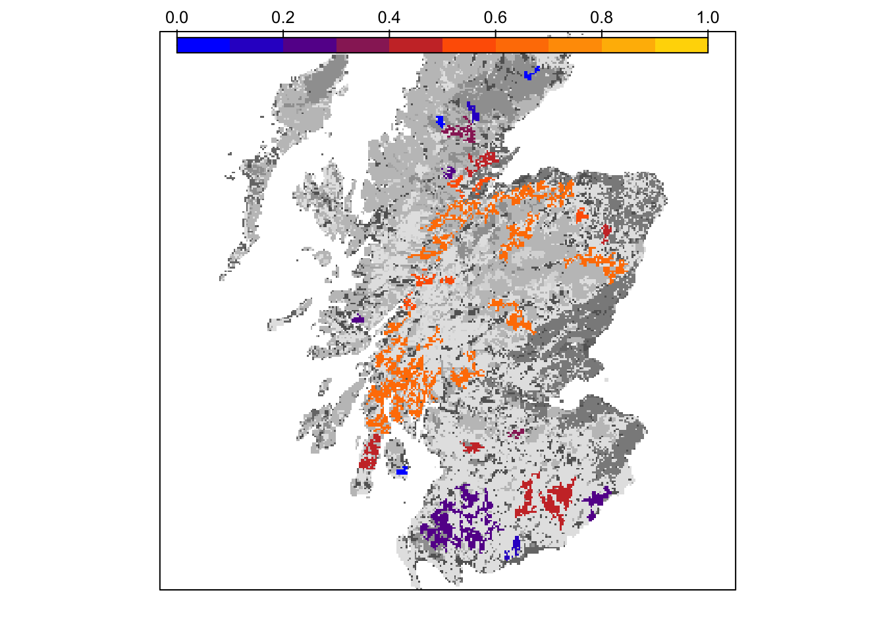
# map colonisation time
mycol_coltime <- colorRampPalette(c('orangered','gold','yellow','PowderBlue','LightSeaGreen'))
levelplot(col_stats_29$map_col_time, margin=F, scales=list(draw=FALSE), at=c(-9,seq(-.001,100,length=11)), col.regions=c('blue',mycol_coltime(11)))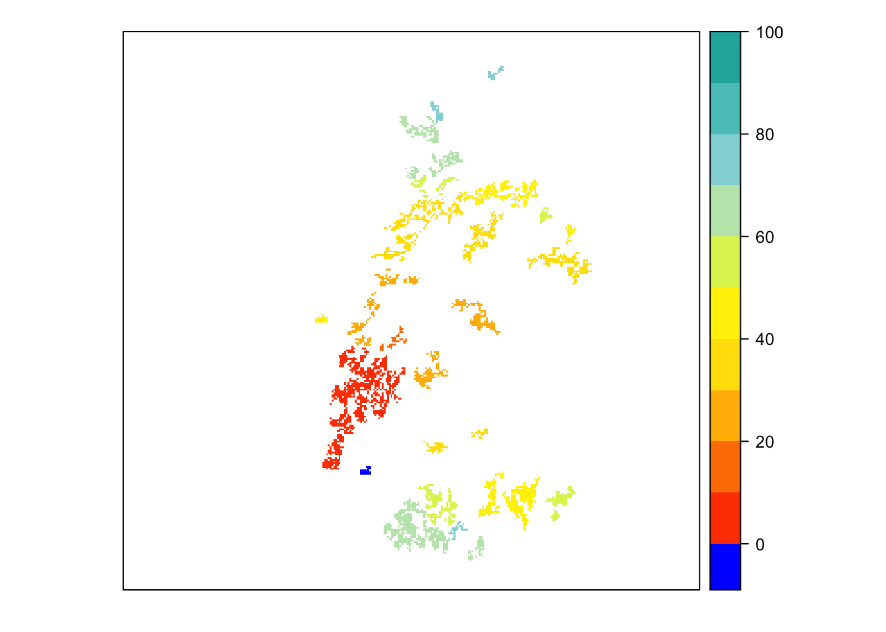
# map colonisation time on landscape background
bg() + levelplot(col_stats_29$map_col_time, margin=F, scales=list(draw=FALSE), at=c(-9,seq(-.001,100,length=11)), col.regions=c('blue',mycol_coltime(11)))
grid.draw(col.key(c('blue',mycol_coltime(11)), c(-9,seq(-.001,100,length=11))))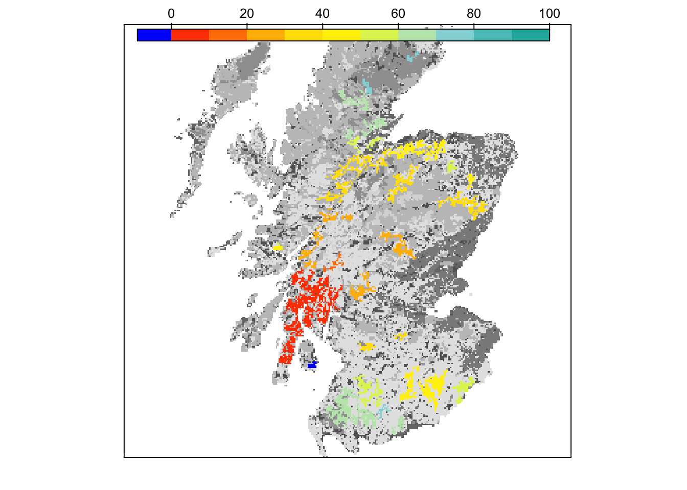
Extinction probability at a specific time can be defined as the proportion of replicate simulation runs without viable population at a specific point in time. We can extract this information from the population output file.
# read population output file into a data frame
pop_29 <- readPop(s_29, dirpath)
# Calculate survival probability as number of replicate with surviving individuals per year
# Extinction probability is 1- survival probability:
# Calculate extinction probability by hand:
pop_29 %>%
group_by(Rep,Year) %>%
# Sum individuals over all cells per year and replicate
summarise(sumPop = sum(NInd), .groups='keep') %>%
group_by(Year) %>%
# Average extinction probability (1 minus the proportion of replicates with surviving populations)
summarise(extProb = 1-sum(sumPop>0, na.rm=T)/RepNb)## # A tibble: 101 × 2
## Year extProb
## <int> <dbl>
## 1 0 0
## 2 1 0
## 3 2 0
## 4 3 0
## 5 4 0
## 6 5 0
## 7 6 0
## 8 7 0
## 9 8 0
## 10 9 0.0100
## # … with 91 more rowsAccordingly, the mean time to extinction can then be defined as the mean time across all replicates when the population went extinct. Again, this information can be extracted from the population output file.
# Mean time to extinction:
pop_29 %>%
group_by(Rep,Year) %>%
# Sum individuals over all cells per year and replicate
summarise(sumPop = sum(NInd), .groups='keep') %>%
# Identify in which year they go extinct
filter(sumPop==0) %>%
pull(Year) %>% mean## [1] 24As the computation of these measures takes a few line of code, it is
useful to define an own function to ease computation and keep our R
script as short as possible. We thus define two new functions (using the
construct function()) for calculating extinction
probability and mean time to extinction.
# Define a function for calculating extinction probability
Calc_ExtProb <- function(pop_df,s) {
require(dplyr)
pop_df %>%
group_by(Rep,Year) %>%
# Sum individuals over all cells per year and replicate
summarise(sumPop = sum(NInd), .groups='keep') %>%
group_by(Year) %>%
# Average extinction probability (1 minus the proportion of replicates with surviving populations)
summarise(extProb = 1-sum(sumPop>0, na.rm=T)/RepNb) %>%
# Make sure that data frame is filled until last year of simulation
right_join(tibble(Year = seq_len(s@simul@Years)), by='Year') %>% replace_na(list(extProb=1))
}
# Define a function for calculating mean time to extinction
Calc_ExtTime <- function(pop_df) {
require(dplyr)
pop_df %>%
group_by(Rep,Year) %>%
# Sum individuals over all cells per year and replicate
summarise(sumPop = sum(NInd), .groups='keep') %>%
# Identify in which year they go extinct
filter(sumPop==0) %>%
pull(Year) %>% mean
}Once loaded into your R console, these functions can be used just as any other function from the different packages. Let’s use our new functions to calculate extinction probability and mean time to extinction for the single-site reintroduction scenario.
# extinction probability
extProb_29 <- Calc_ExtProb(pop_29,s_29)
# Plot extinction probabilities
ggplot(data = extProb_29, mapping = aes(x = Year, y = extProb)) +
geom_line() +
ylim(0,1)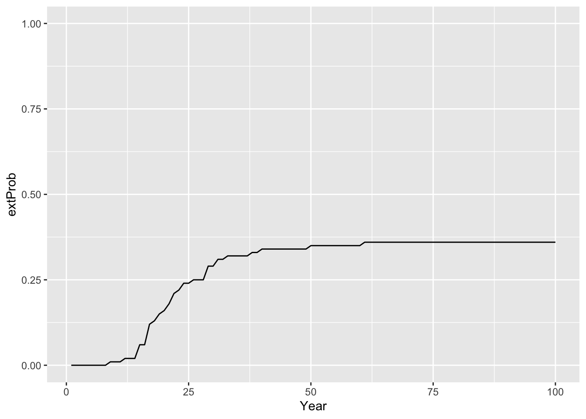
# mean time to extinction
Calc_ExtTime(pop_29)## [1] 24The results indicate that although the mean abundances across 100 replicate simulations are increasing over time, there is still a certain risk of extinction for the reintroduced lynx. Whether the reintroduced population is deemed to extinction or not seems to be determined comparably early with a mean time to extinction of c. 24 years.
Next, we simulate the multi-site scenario.
# Run simulations
RunRS(s_29_15, dirpath)# general output of population size + occupancy
par(mfrow=c(1,2))
plotAbundance(s_29_15,dirpath,sd=T, rep=F)
plotOccupancy(s_29_15, dirpath, sd=T, rep=F)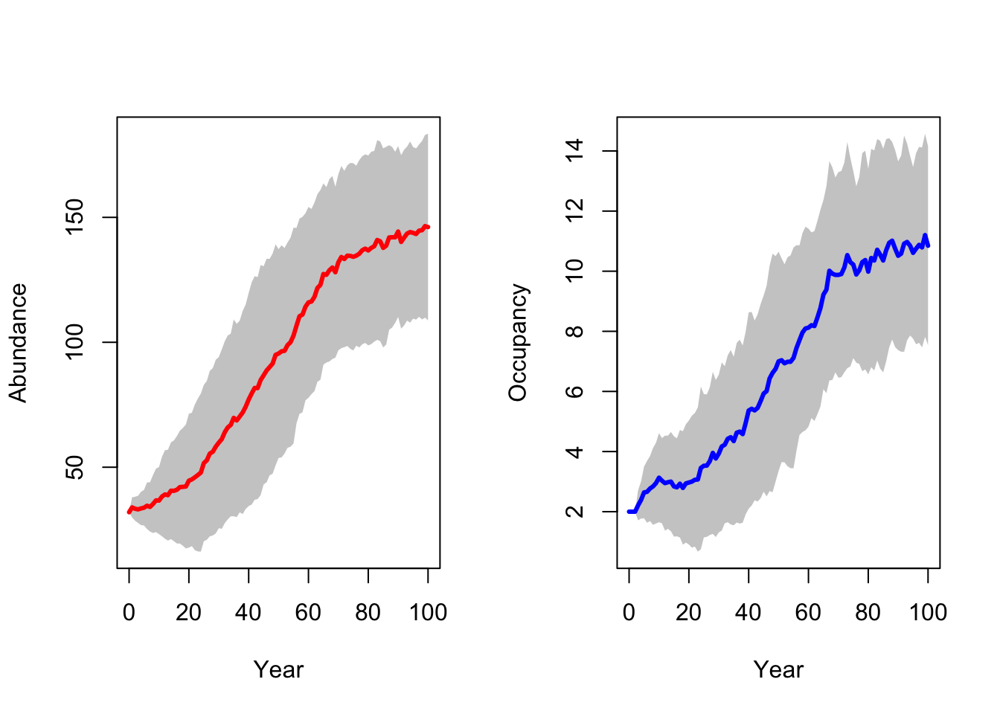
Although we reintroduced a larger number of lynx, the final population abundances are not much higher in this scenario compared to the single-site reintroduction.
Again, we calculate additional colonisation metrics, and map occupancy probability and time to colonisation.
# Colonisation metrics
col_stats_29_15 <- ColonisationStats(s_29_15, dirpath, years = 100, maps = T)# map occupancy probability after 100 years
bg() + levelplot(col_stats_29_15$map_occ_prob, margin=F, scales=list(draw=FALSE), at=seq(0,1,length=11), col.regions=mycol_occprob(11))
grid.draw(col.key(mycol_occprob(11),at=seq(0,1,length=11)))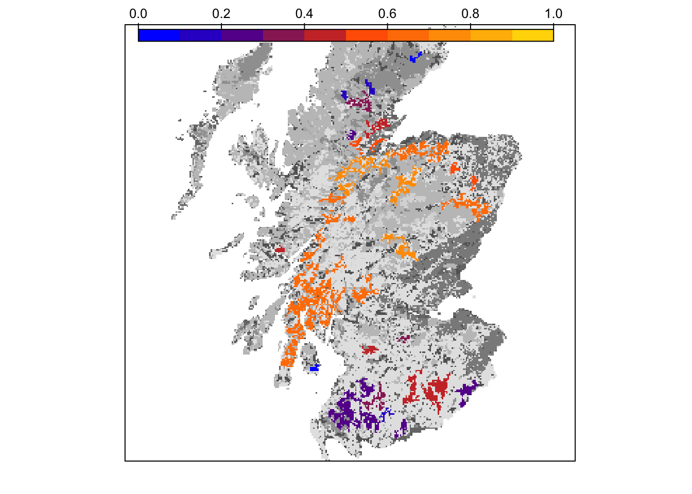
# map colonisation time
bg() + levelplot(col_stats_29_15$map_col_time, margin=F, scales=list(draw=FALSE), at=c(-9,seq(-.001,100,length=11)), col.regions=c('blue',mycol_coltime(11)))
grid.draw(col.key(c('blue',mycol_coltime(11)), c(-9,seq(-.001,100,length=11))))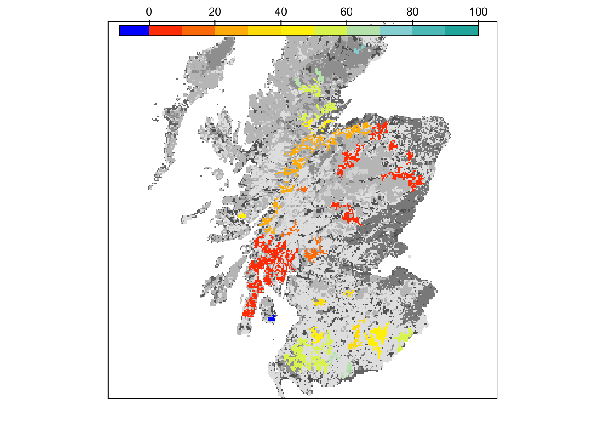
Final occupancy probability does not seem much different from the first scenario, but we can observe slightly earlier time to colonisation.
Last, we calculate extinction probability and mean time to extinction, and compare these between the single-site and multi-site reintroductions.
# read population output file into a data frame
pop_29_15 <- readPop(s_29_15, dirpath)
# extinction probability
extProb_29_15 <- Calc_ExtProb(pop_29_15,s_29_15)
# mean time to extinction
Calc_ExtTime(pop_29_15)## [1] 39.42857# Compare extinction probabilities for single- and multi-site reintroduction
# Join extinction probabilities in a single data frame
extProb_scens <- bind_rows(extProb_29 %>% add_column(Scenario = "10 ind. Kintyre "),
extProb_29_15 %>% add_column(Scenario = "32 ind. Kintyre + Aberdeenshire"))
ggplot(data = extProb_scens, mapping = aes(x = Year, y = extProb, color=Scenario)) +
geom_line(size=2) +
ylim(0,1)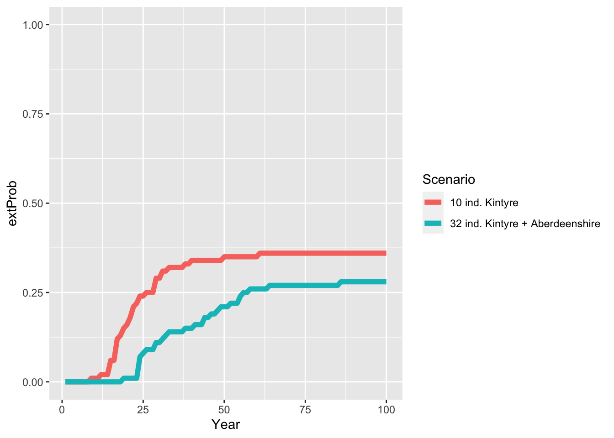
As result, the multi-site reintroduction reduces the extinction probability of lynx and also the mean time to extinction takes longer. Still, there is only a 75 % chance of successfull long-term establishment of lynx in Scotland.
Task: test other reintroduction sites
Now, it’s your turn. Test other reintroduction sites, e.g. the Keilder Forest as described in Ovenden et al. (2019).